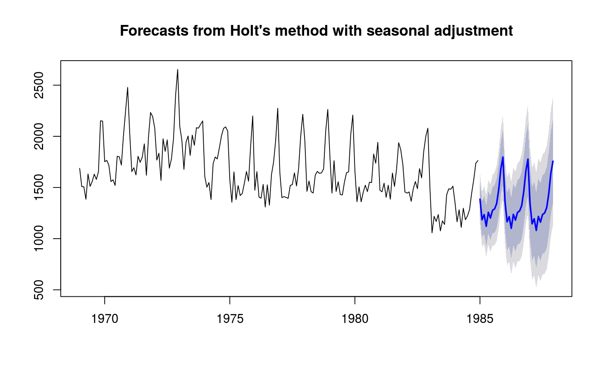

Returns vector containing the seasonal index for h future periods. If
the seasonal index is non-periodic, it uses the last values of the index.
sindexf(object, h)
| object | |
|---|---|
| h | Number of periods ahead to forecast |
Time series
uk.stl <- stl(UKDriverDeaths,"periodic") uk.sa <- seasadj(uk.stl) uk.fcast <- holt(uk.sa,36) seasf <- sindexf(uk.stl,36) uk.fcast$mean <- uk.fcast$mean + seasf uk.fcast$lower <- uk.fcast$lower + cbind(seasf,seasf) uk.fcast$upper <- uk.fcast$upper + cbind(seasf,seasf) uk.fcast$x <- UKDriverDeaths plot(uk.fcast,main="Forecasts from Holt's method with seasonal adjustment")